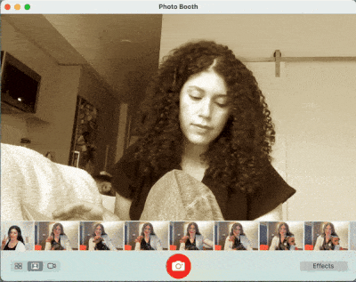
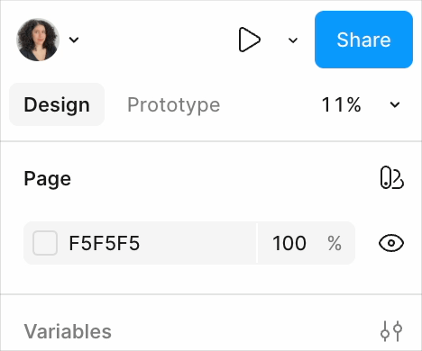
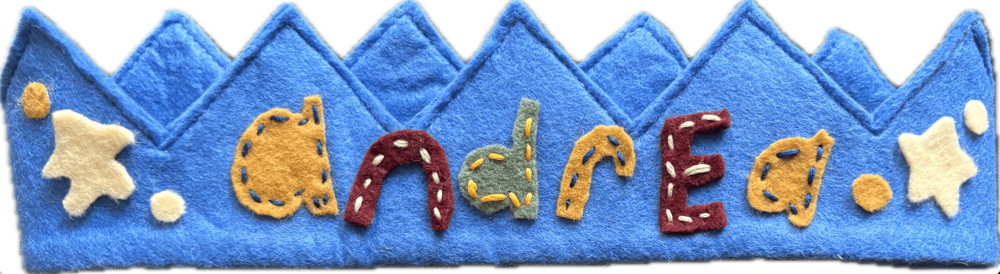
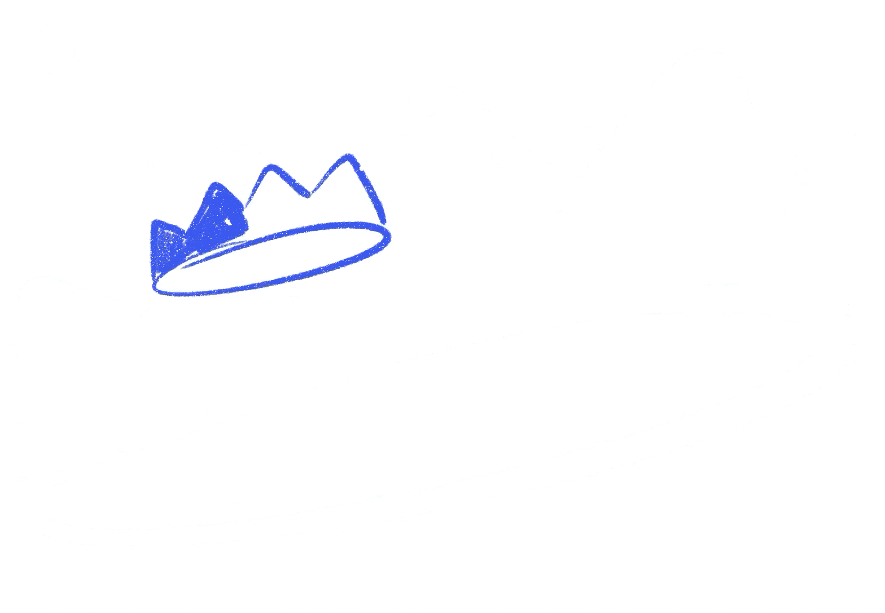
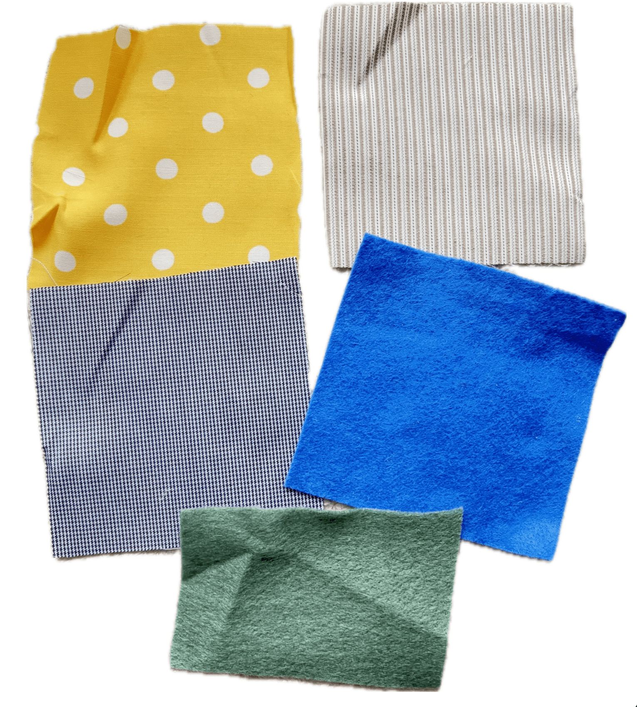
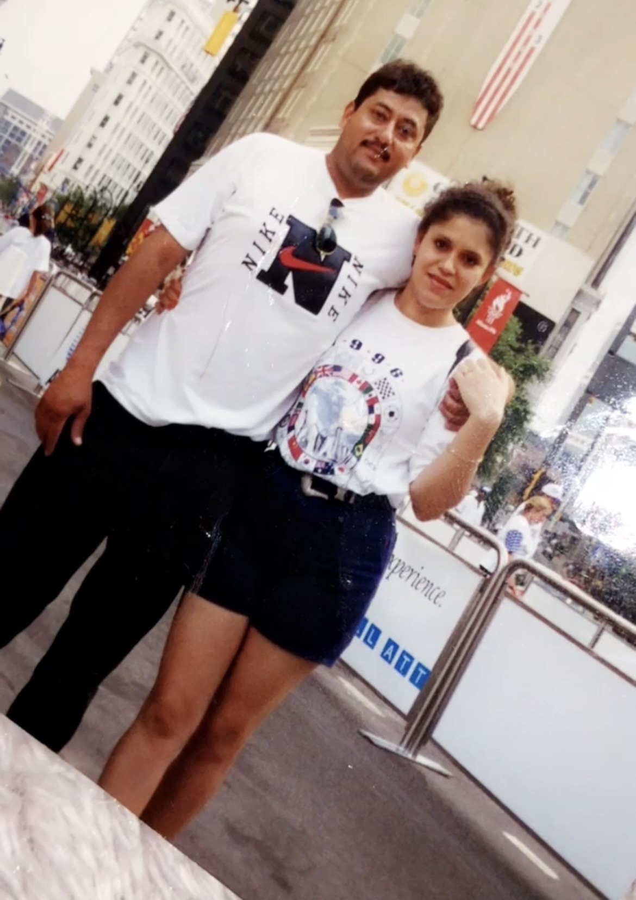
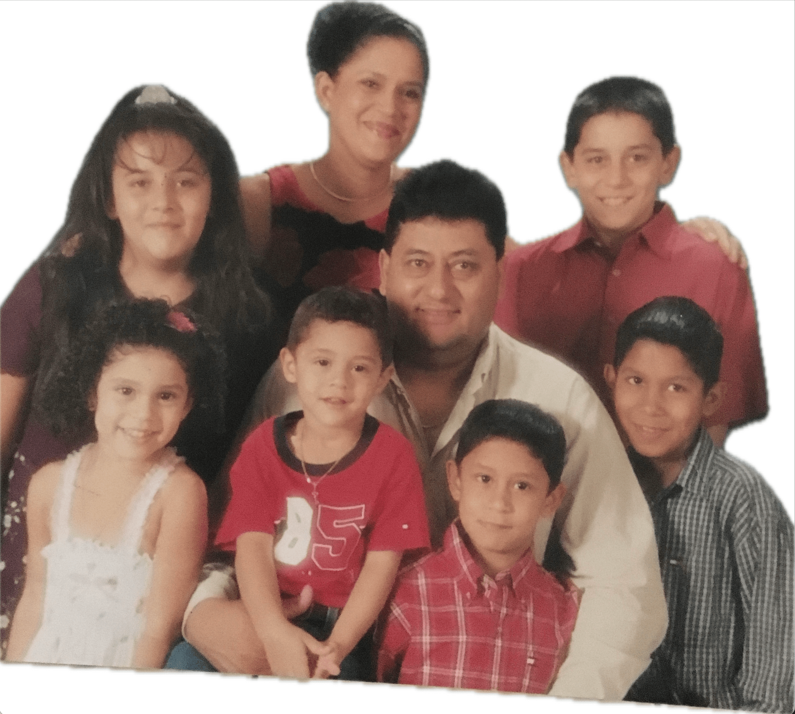
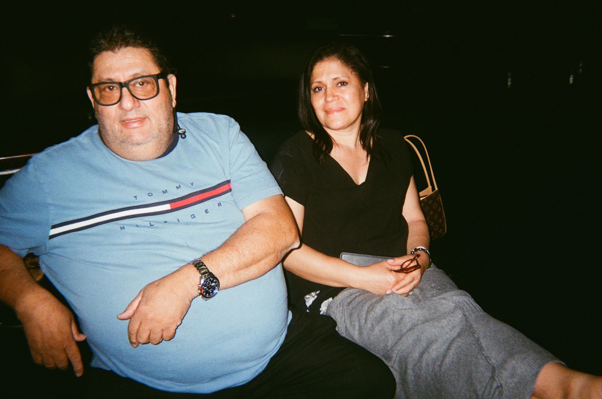

2025 · designed in figma and built in code in seattle . ݁₊ ⊹ .
conversation is my favorite medium
Hello, I'm Andrea (pronounced an-DRAY-yah in Spanish or Un-dreh-yah in English).
By day, I'm a UX designer focused on simplifying the complex Cloud space for enterprise customers through the power of human-centered design.
By night, I channel that passion into being an all-around creative, exploring media and projects that expand my craft and perspective. I thrive at the intersection of technology and creativity, using both structured problem-solving and divergent thinking to produce impactful experiences.
My interests center on designing meaningful experiences, moments, and products that spark and invoke positive emotions in people.

A few things in my design process and creative toolkit that I like to leverage to think, design, and build experiences that matter. I integrate research, design exploration, sketching, prototyping, craft, and storytelling to create digital and physical experiences that bridge the gap between people and everyday technology.




My parents immigrated to the United States from Honduras in their early twenties, meeting for the first time in Atlanta, Georgia. There, they built a life and raised me and my five siblings. Their determination inspires me directly, cultivating a deep appreciation of perseverance, and fostering the resourcefulness and comfort with the unknown that now anchor my approach to design problems.



2025 · designed in figma and built in code in seattle . ݁₊ ⊹ .
conversation is my favorite medium